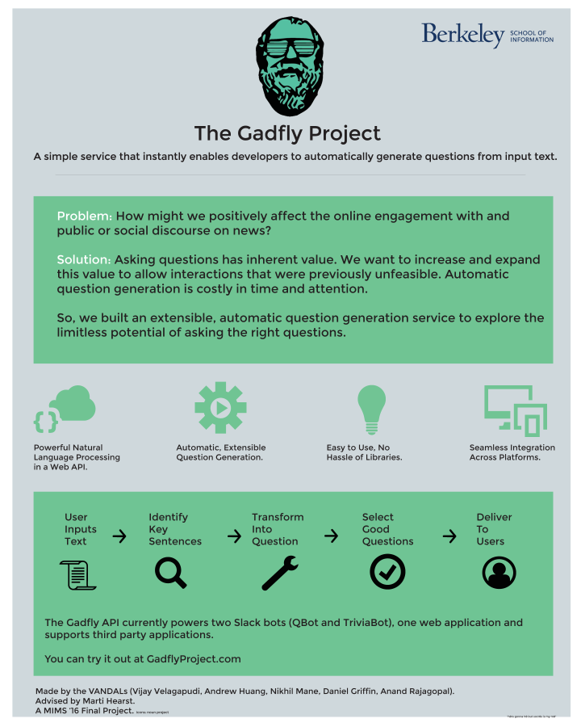
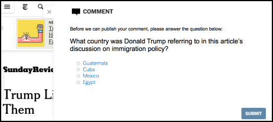
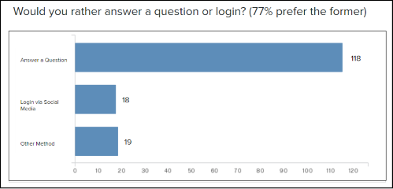
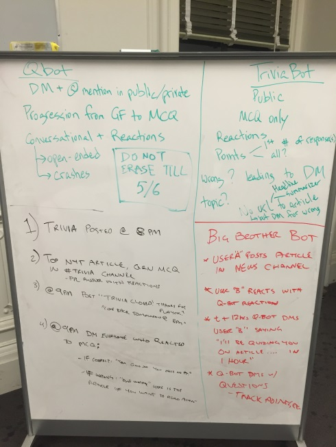
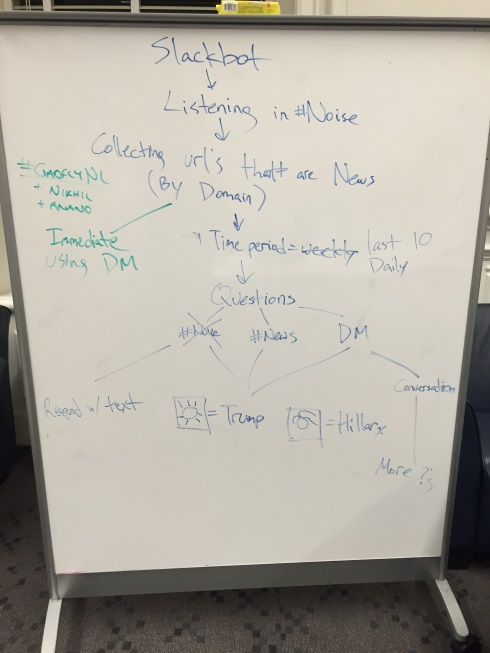
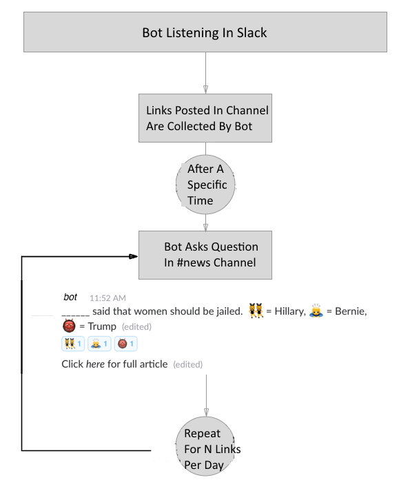
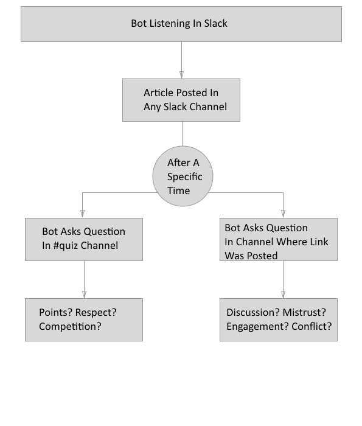
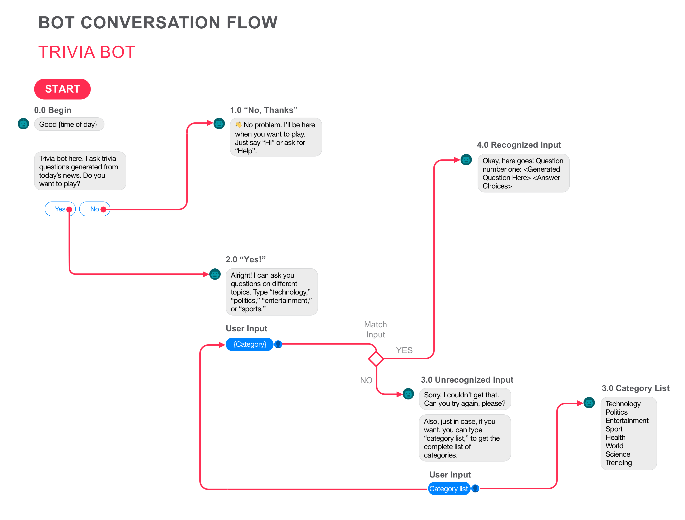
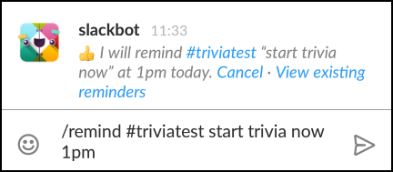
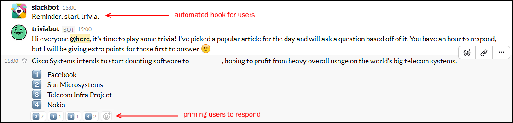

The Gadfly Project
Conversation as an interface.
- User Research Product Vision Conversational Design Slack Bot Development
What is the Gadfly Project?
The Gadfly Project is an API that uses natural langugage processing to generate meaningful questions. Don't wanna scroll down? Here's a pdf.
I designed and developed 2 Slack bots to demonstrate the potential of our API. The API enables and empowers several use cases in different domains such as education, online news reading, commenting, employee training, knowledge management, and onboarding to name a few.

I also made this simple poster for more info.
Initial Hypothesis
Here's a simple example of the idea. Imagine that you just read an article that you want to comment on. Now, you will be asked a question generated by our service to demonstrate that you actually read the article. Here's how it might look:

Researching the Problem
We interviewed three local newspaper publishers (Berkeleyside, SFGate, Daily Cal) to find out what they thought of our idea.
Substituting a question for login is plausible but we need to see it in action. — Lance Knobel, co-founder of Berkeleyside
All these publishers were open to the idea of integrating our software with their existing provider, Disqus. So, we spoke to the CEO of Disqus who thought that questions could be a good prompt to motivate the user to engage with the article.
It would be interesting to see how the questions asked influence the quality of the resulting comment. — Daniel Ha, CEO of Disqus
Takeaway: They were interested but it was not a big enough problem to be an immediate priority. It was hard to explain our idea without a working product.
Surveying Readers
We used a survey to understand people's news reading and online commenting behavior. Within 10 days, we received 181 responses (82% completion rate!).

Product Vision
I defined product vision by imagining what The Gadfly Project could be using the working backwards approach I learned at Amazon. This helped the team communicate in more concrete terms. You can read it here.
Why Trivia? Why Bots?
From our interviews, we noticed that people came up with trivia as a use case on their own. One of our key stakeholders, our advisor, encouraged us to explore the trivia use case. We had access to the school slack which provided a controlled testing ground and access to over 250 users. Our second use case was for testing the use of questions for engagement.
Mapping Potential Flows
As a team we ideated different scenarios and created a set of high-level actions that would need to be supported for these use cases. We then decided to focus on one using flow charts to map flow and interactions.
 
Below are flowcharts for our bot. However, this was confusing for our test users as both use cases were pretty different. I took up the responsibility of building the bot. After doing a feasibility and scope analysis and going through the Slack API, I realized that we would need to change the flow.

Below you can see a user flow.

Reducing User Friction
Since our use case was new, I wanted to lower the barrier of entry for our users. Not everyone has the same level of familiarity with Slack and I made changes to our messages after testing. From rapid testing, I figured out that novice users were not familiar with reactions on Slack.
For each question, I added reactions representing each answer choice so that there would be no ambiguity about how the users should answer the question.
To eliminate one more level of friction, I used Slack's /remind feature to automate the trivia flow leading to increased engagement.


Rapid Iterative Testing
The 2 Slack Bots (news and trivia) helped the team gather quick feedback from more than 20 users. I integrated Slack's reaction feature as a way of gathering quantitative feedback about the questions generated. From qualitative feedback, we were able to improve our conversational flow. As a result of the data collected, we could improve the API. One of the main improvements was the addition of multiple choice questions.
In Action
This is a screenshot of an actual trivia session we organized during our live demo. 
If you have an ischool.berkeley.edu email address, you can join ischool.slack.com and try out our bots there!
What's Next
I am personally interested in the application of this approach to the problem of employee training and onboarding.
Some Thoughts On Bots
Paraphrasing Don Norman, the best interface is no interface. For me, conversational user interfaces (CUIs) have potential to be 'no interfaces'. Think of them as conversational endpoints. Some of the challenges of designing conversational interfaces are: the lack of traditional visual elements, lack of an information hierarchy ("where do I go next?"), the absence of conventional markers, and the simple fact that natural language is too complex.
PS. The Gadfly Project was recognized as an innovative, creative solution, and pragmatic application in the area of online information problems by the UC Berkeley School of Information. I am actively involved with the Slack Developer community and genuinely excited about conversation as interface.
Prev
Close
Next